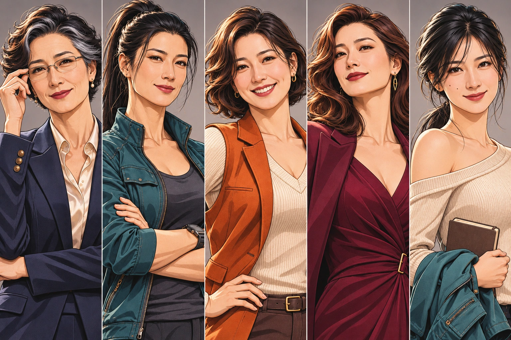
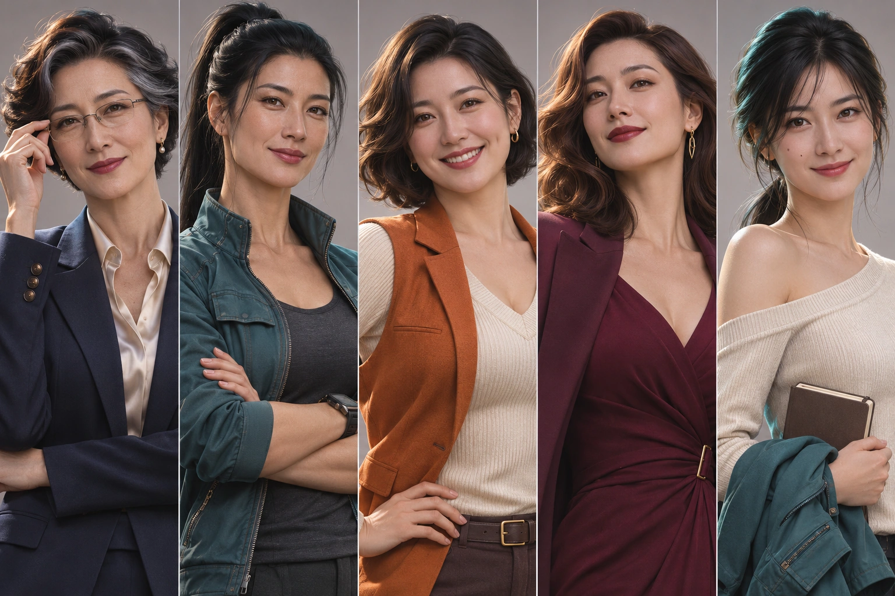

第五稿 · 面部美感与人物差异重做
女性角色重新设计
本轮将粗重的方块轮廓改为更精细的漫画人物。优先调整成年五官、眼神、头发和肤质，保留不同脸型、年龄与气质。五位均为原创成年角色。
漫画风版本

点击图片看大图，或向下逐位查看。

写实审美参考
同一轮制作的写实方向，保留供比较。

第五稿 · 面部美感与人物差异重做
本轮将粗重的方块轮廓改为更精细的漫画人物。优先调整成年五官、眼神、头发和肤质，保留不同脸型、年龄与气质。五位均为原创成年角色。

点击图片看大图，或向下逐位查看。
同一轮制作的写实方向，保留供比较。
